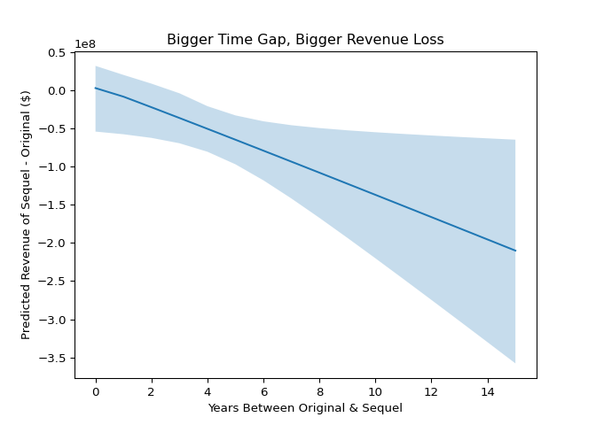
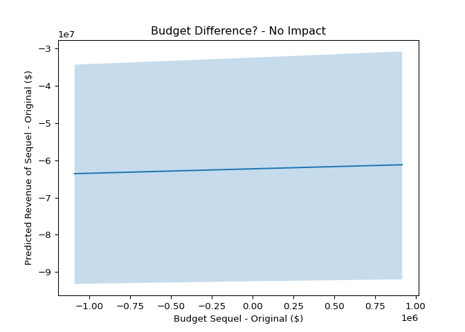

Find an overview of the movie sequel landscape looking at the past 100 years of film.
Python
Data Journalism
Published
March 29, 2024
Introduction
I’ve wanted to do this post for a while now. When I was younger, it seemed movies were more of a one-off thing. Now, it feels like almost every movie has a sequel and sometimes many more. Lets look at some data to see what’s going on here. For this analysis, I write down a series of questions and answer them one-by-one. Scroll down to see the questions ⬇️
This project was fun for me because I worked with a friend who knows a lot more about film than I do. He studied film in school and provided a lot of insight into the post here. From picking interesting questions to ask to interpretting trends and patterns in the data where I was confused, his help was valuable!
Previous Studies
I started this analysis by looking at what others had done with movie sequels. I found loads of data movie analyses, but few about movie sequels. Here are a few interesting links I found specifically about sequels:
I found a kaggle project looking at this question, and I followed a similar data preparation process (without using French Wikipedia). He takes an indepth look at the question.. Are movie sequels less quality?
This one gives a good overview of some of the assumptions that go into this type of analysis. For example, “how is a series defined?” and “What do we do with series that have changed significantly over time?”
This one looks interesting, but several of the figures wouldn’t render on my device which referenced the company silk.co. I am skeptical that this website/company still exists.
Data
For the data, I used a list created on IMDB containing around 1200 movies and sequels. It is not an exhaustive list, but it covers a lot of ground. Unfortunately, this list was missing a few things I wanted such as the movie’s revenue, budget, language, production company, and other variables. I joined these in via the TMBD API. The data is available for download on the link to the side.
In the first chart, I also join in a non-commercial dataset from IMDB which can be accessed here.
Warning
The data from TMDB is community based - meaning people self-report the revenue and some of the other data. Unfortunately, this means that there may be errors at times in the data. There are state-of-the-art data and APIs available, but only through paywalls and I‚Äôm not paying üòÇ
Definition
In this blog post, I primarily look at the first movie in a series and its immediate sequel. There’s certainly a lot more to be explored in the dataset, but I choose to filter this way because of its simplicity. I won’t have to worry about sparcity as sequel number increases and important differences between case1, original and sequel #1, vs case2, sequel #X and sequel #X+1.
Questions
Are There More Sequels Over Time?
Warning
Upon manual inspection of the data, I noticed that the list did not include a lot of movie sequels after 2010 eventhough some exist. For example, my data includes the first 5 Tinker Bell Movies up until 2012, but does not include movies 6-8. Yes, there are 8 Tinker Bell moviesüòÇ. So, I would interpret the decrease in sequels after 2012 with caution.
Main Takeaway: It seems there was a spike in sequels after the year 2000. And, the spike in sequels may have come a little bit before the spike in movies, but, generally, sequel production has followed the movie production trend overall and increased over time.
Do Sequels Make More Than The Original?
Note
I noticed that several movie revenues were missing, so I went through each missing value and looked up the revenue here which is the recommended resource for TMDB contributors (read more in the TMDB Bible). Originally, there were some significant movies that showed $0 such as Avatar (the blue people version), one of the best performing films ever. I added in all the latest numbers in the data that can be downloaded on the right.
These number are inflation adjusted using the CPI.
This chart is interactive. Click or press the different points which each represent a different series. Use the toolbar to zoom in and out on certain parts of this graph for further exploration. Also, note there are buttons to log and unlog the axes to get a different view of the data.
Notice how more dots are below the line then above the line, this indicates that the originals typically perform better than the sequels. But, lets look at a few other charts to confirm our thinking.
Tip
You may be surprised to see Bambi as the highest original film box office in my sequel dataset. But, remember, this film was first released in 1942 with a worldwide box office of $268 Million. In today’s dollars, this is valued a lot higher!
Tip
Above, I define “About the same” when the revenue of the sequel is the same as the original within a 10% margin (+/- 5%)
Looking at a simple crosstab breakout above, we see that the original movie is likely to make more money than the sequel more than 60% of the time.
However, if you look at the distributions between the original and the sequel, they look quite similar. There is an exception though: sequels are much more likely to make zero dollars.
Main Takeaway: More than 60% of the time, the original outperforms the sequel. If the sequel makes revenue, the sequel may perform similarly to the original in revenue.
Are Sequels Rated Higher Than The Original?
The IMDB distributions for these are fairly gaussian bell-curve looking. As you can see, the original is on average rated higher with a median rating of 6.9 whereas the sequel is on averate rated lower with a median of 6.1.
We are just looking at the overall distributions here, but we can calculate the actual average difference in score which I do below.
def imdb_diff(data_part): tmp = data_part.sort_values("sequel_num").reset_index(drop=True)return tmp.loc[0,"IMDb Rating"] - tmp.loc[1,"IMDb Rating"]diff = data.query("sequel_num in [1,2]") \ .groupby("sequel_group") \ .apply(imdb_diff) \ .mean()diff =round(diff,2)print(f"On average, the original is rated {diff} points higher than its sequel")
On average, the original is rated 0.77 points higher than its sequel
Main Takeaway: According to our dataset, IMDB Scores are about 0.8 points higher for original movies than for their immediate sequels.
Are Sequels More Popular Than The Original?
The TMDB popularity score is intended to be a “lifetime popularity score” for movies. It is created by putting together website traffic and human interaction with each movie on TMDB. You can read a more indepth discussion of this metric here.
Main Takeaway: According to TMDB’s popularity metric, originals and sequels look similar in popularity with the originals perhaps having a slight edge.
I was supprised when this variable was shockingly right skewed. I assumed the creators would have normalized their score, so that is why I log transform here.
Do Sequels Typically Recieve Less Budget?
Note
These number are inflation adjusted using the CPI.
Tip
For most the analysis, I use just the original and first sequel; however, for this chart and the next, we look include more sequels.
Main Takeaway: Lower numbers of sequels are more common (you can see the N-size decrease as the sequel number increases), but the trend is clear; sequels on average recieve a higher budget.
Which Production Companies Make The Most Sequels?
Main Takeaway: Of the companies listed, each one dips its fingers in the sequel game. But, according to our data, 20th Century Fox and Universal Studios have made the most sequels.
Future note: It would be interesting to see the total number of movies each company has made to compare the proportion.
What Predicts The Monetary Success of Sequels?
For this section, I created a statistical model to help answer the next few questions. The model is good measuring the independent impact of multiple variables inputted. This method will help us tease out more findings from out data.
It is important to keep in mind that this model is predicting the difference in revenue from original to sequel and the factors that influence this difference.
Here is a table from our statistical model showing us the direction of each variable (Impact) positive or negative and whether the model was able to statistically differentiate the effect from zero (Significant). Generally, we just interpret the rows that are Significant because we are confident these are non-zero effects (either positive or negative).
Impact
Significant
Original & sequel have the same director
-
False
Time between original and sequel
-
True
Sequel IMDB score minus original
+
True
Action movie
+
True
Horror movie
+
False
Comedy movie
+
False
Romance movie
-
False
Family movie
-
False
Sequel budget minus original
+
False
Warner Bros movie
-
False
Fox movie
-
False
Disney movie
-
False
Universal movie
+
False
Marvel movie
+
False
Note
You can view my modeling steps and process in my downloadable python script.
I will note a few things here, but a few of the findings in this table relate to future questions. So will leave those parts for those sections.
Takeaway #1: Having a higher quality movie (higher IMDB score) has a positive significant effect on the revenue of the sequel.
Takeaway #2: Some genres could perform better than others. We see a positive effect from sequels of action (Maybe that‚Äôs why there are so many super hero movies ü§∑‚Äç‚ôÇÔ∏è). While these relationship are not statistically significant, our model‚Äôs best guess for horror and action sequels is a positive effect and for family and romance sequels is a negative effect. Perhaps with more sequel data we could detect differences there.
Takeaway #3: None of the big production companies have a positive statistically significant impact on the revenue of a sequel when compared to the original.
How Does Timing Affect A Sequel’s Success?

Main Takeaway: The answer? It’s not good. In fact, our model predicts that for each additional year of waiting, the sequel will lose $10 Million on average.
Do Sequels With More Budget Fair Better?

Main Takeaway: As you can see, the line is pretty flat meaning budget does not have a meaningful impact in our model. Though our model’s best guess is budget having a positive impact on sequel revenue.
Are Sequels Who Keep The Same Director More Or Less Successful?
Main Takeaway: Our model doesn’t find a statistically significant relationship between keeping directors. Interestingly, our model’s best guess is a negative impact on sequel revenue when a director is kept.
Notes for Future Study
I have a few notes here in case any data folks are interested in looking into things further…
For my analysis, I primarly looked at the original and the first sequel. However, my dataset contains a lot more than that! It would be interesting continuing this analysis looking at how adding more sequels after the first affects things like popularity, IMDB score, and revenue.
I mainly focused on revenue as my primary dependent variable. Perhaps exploring IMDB score and popularity would also be interesting dependent variables.
When I was finishing up the analysis I found that TMDB has a part of its API where you can access collections which are functionally movie series. For researchers interested in a more expansive dataset than I compiled, this may be a good place to start.
It would be interesting to zoom in on a particular subset. For example, maybe a specific production company has meaningful differences to explore or a specific genre.
Conclusion
Thanks for reading. Feel free to use my code and dataset freely. If you end up using anything, shoot me a message. I’d love to see other analyses and ideas. For technical questions, check the python script and download the data. I go in detail checking and validating the regression model used in this post.
If you enjoyed the read or have any questions about the analysis or other ideas, drop a comment below!